SignallingSingleCell
SignallingSingleCell is an R package that provides an end-to-end approach for the analysis of scRNA-seq data, with a particular focus on building ligand and receptor signaling networks.
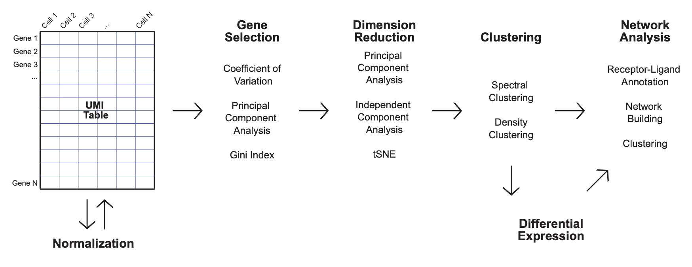
SignallingSingleCell Package
The workflow of SignallingSingleCell consists of a few key steps;
- filtering
- gene selection
- dimension reduction
- clustering
- differential expression
- network analysis.
Additionally, the package has a variety of features that were built in an ad hoc manner. These features include algorithms for the detection of marker genes that are specific to each cell type, aggregation functions used to construct in silico bulk data, and a supervised method of scRNA-seq analysis in order to contextualize the scRNA-seq data with commonly used immunological markers.
Each of the steps in the analysis workflow will be described in the following vignette by applying the package to the BMDC and human vitiligo scRNA-seq data.
BDMC Data
We performed scRNA-seq on the bone marrow-derived dendritic cells (BDMCs) in order to determine the cell populations that are present, contextualize these cell populations based on recent studies. We have analyzed the data using the R package, SignallingSingleCell.
The data used in this vignette is derived from Bone marrow extracted from 6-8 week old female C57 mice, and floating cells were collected on day 8 after derivation with GM-CSF following the protocol in (Donnard et al., 2018). BMDCs were then stimulated with LPS for 0, 1, and 4 hr before performing scRNA-seq using an in house built inDrop system (Klein et al., 2015).
Package and Data Loading
library("SignallingSingleCell")
library(kernlab)
load(url("https://galaxyweb.umassmed.edu/pub/class/mDC_UMI_Table.Rdata"))
load(url("https://galaxyweb.umassmed.edu/pub/class/ex_sc_skin.Rdata"))Preprocessing
Constructing the ExpressionSet Class
The ExpressionSet class (ex_sc) is a convenient data structure that contains 3 dataframes. These dataframes contain expression data, cell information, and gene information respectively.
exprs(ex_sc) is the expression data, where rows are genes and columns are cells. pData(ex_sc) is cell information, where rows are cells and columns are metadata. fData(ex_sc) is gene information, where rows are genes and columns are metadata.
ex_sc <- construct_ex_sc(input = mDC_UMI_Table) # mDC_UMI_Table == Digital Gene Expression Matrix
class(mDC_UMI_Table)[1] "matrix" "array" class(ex_sc) [1] "ExpressionSet"
attr(,"package")
[1] "Biobase"ex_sc # pData() and fData() are emptyExpressionSet (storageMode: lockedEnvironment)
assayData: 11584 features, 3814 samples
element names: exprs
protocolData: none
phenoData: none
featureData: none
experimentData: use 'experimentData(object)'
Annotation: exprs(ex_sc)[1:5,1:5] 0hrA_TGACGGACAAGTAATC 0hrA_CACAACAGTAGCCTCG 0hrA_GTTTGTTTGCACCTCT
0610007P14Rik 0 0 0
0610009B22Rik 0 0 0
0610009O20Rik 0 0 0
0610010B08Rik 0 0 0
0610010F05Rik 0 0 0
0hrA_GCTTACCTTGACCCTC 0hrA_GGAGAAGCGCTTTGGC
0610007P14Rik 0 0
0610009B22Rik 0 0
0610009O20Rik 0 0
0610010B08Rik 0 0
0610010F05Rik 0 0pData(ex_sc)[1:5,]data frame with 0 columns and 5 rowsfData(ex_sc)[1:5,]data frame with 0 columns and 5 rowsrm(mDC_UMI_Table)Data Annotation
Often we have metadata about the experiment that can be valuable in the analysis! Writing that information now may be appropriate. Our experiment consists of a time course with LPS stimulation. The cell names in the DGE Matrix contain a substring encoding this information.
rownames(pData(ex_sc))[c(1,2000,3000)][1] "0hrA_TGACGGACAAGTAATC" "1hrA_TCATGAGGCTTACTCC" "4hrA_CATACATTCCTATTCA"pData(ex_sc)$Timepoint <- NA # initialize a new pData column
table(pData(ex_sc)$Timepoint)< table of extent 0 >pData(ex_sc)[grep("0hr", rownames(pData(ex_sc))),"Timepoint"] <- "0hr"
pData(ex_sc)[grep("1hr", rownames(pData(ex_sc))),"Timepoint"] <- "1hr"
pData(ex_sc)[grep("4hr", rownames(pData(ex_sc))),"Timepoint"] <- "4hr"
head(pData(ex_sc)) Timepoint
0hrA_TGACGGACAAGTAATC 0hr
0hrA_CACAACAGTAGCCTCG 0hr
0hrA_GTTTGTTTGCACCTCT 0hr
0hrA_GCTTACCTTGACCCTC 0hr
0hrA_GGAGAAGCGCTTTGGC 0hr
0hrA_AAATCAGAGATCTCGG 0hrtable(ex_sc$Timepoint)
0hr 1hr 4hr
1729 1004 1081 Filtering
Often you will want to filter your data to remove low quality cells. There are many ways to do this, often using the number of captured transcripts, unique genes per cell, or the percent of mitochrondrial genes to remove low quality cells.
ex_sc <- calc_libsize(ex_sc, suffix = "raw") # sums counts for each cell
ex_sc <- pre_filter(ex_sc, minUMI = 1000, maxUMI = 10000, threshold = 1, minCells = 10, print_progress = TRUE) # filters cells and genes[1] "Filtering Genes"
[1] "Filtering Low Cells"ex_sc <- calc_libsize(ex_sc, suffix = "raw_filtered")
plot_density(ex_sc, title = "UMI Density", val = "UMI_sum_raw_filtered", statistic = "mean") 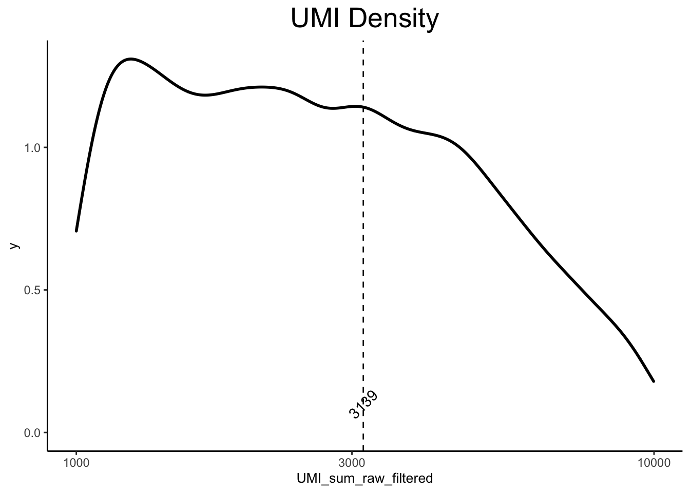
head(pData(ex_sc)) Timepoint UMI_sum_raw UMI_sum_raw_filtered
0hrA_TGACGGACAAGTAATC 0hr 4572 4570
0hrA_CACAACAGTAGCCTCG 0hr 1581 1580
0hrA_GTTTGTTTGCACCTCT 0hr 2296 2288
0hrA_GCTTACCTTGACCCTC 0hr 2098 2097
0hrA_GGAGAAGCGCTTTGGC 0hr 2425 2421
0hrA_AAATCAGAGATCTCGG 0hr 6618 6601plot_density_ridge(ex_sc, title = "UMI Density", val = "UMI_sum_raw_filtered", color_by = "Timepoint") Picking joint bandwidth of 444
Basic scRNA-seq analysis
Dimension reduction
Dimensionality reduction is necessary in order to bring the cells from a high dimensional gene expression space (~10k dimensions, one dimension per gene) down to a more reasonable number. Typically this is done first with PCA to bring it down to ~5-15 dimensions, before a final embedding is done using tSNE or UMAP to bring it down to 2 dimensions.
?subset_genes
gene_subset <- subset_genes(ex_sc, method = "PCA", threshold = 1, minCells = 20, nComp = 10, cutoff = 0.85)
dim(ex_sc)Features Samples
11055 3812 length(gene_subset)[1] 1513ex_sc <- dim_reduce(ex_sc, genelist = gene_subset, pre_reduce = "vPCA", nVar = .9, nComp = 30, iterations = 500, print_progress=TRUE) [1] "Starting vPCA"
[1] "Starting tSNE"
Read the 3812 x 6 data matrix successfully!
Using no_dims = 2, perplexity = 30.000000, and theta = 0.500000
Computing input similarities...
Building tree...
Done in 0.32 seconds (sparsity = 0.030912)!
Learning embedding...
Iteration 50: error is 85.845353 (50 iterations in 0.56 seconds)
Iteration 100: error is 75.307034 (50 iterations in 0.59 seconds)
Iteration 150: error is 74.450519 (50 iterations in 0.51 seconds)
Iteration 200: error is 74.241244 (50 iterations in 0.45 seconds)
Iteration 250: error is 74.171178 (50 iterations in 0.45 seconds)
Iteration 300: error is 2.164292 (50 iterations in 0.41 seconds)
Iteration 350: error is 1.796806 (50 iterations in 0.39 seconds)
Iteration 400: error is 1.621976 (50 iterations in 0.41 seconds)
Iteration 450: error is 1.521631 (50 iterations in 0.41 seconds)
Iteration 500: error is 1.460825 (50 iterations in 0.41 seconds)
Fitting performed in 4.59 seconds.plot_tsne_metadata(ex_sc, color_by = "Timepoint") 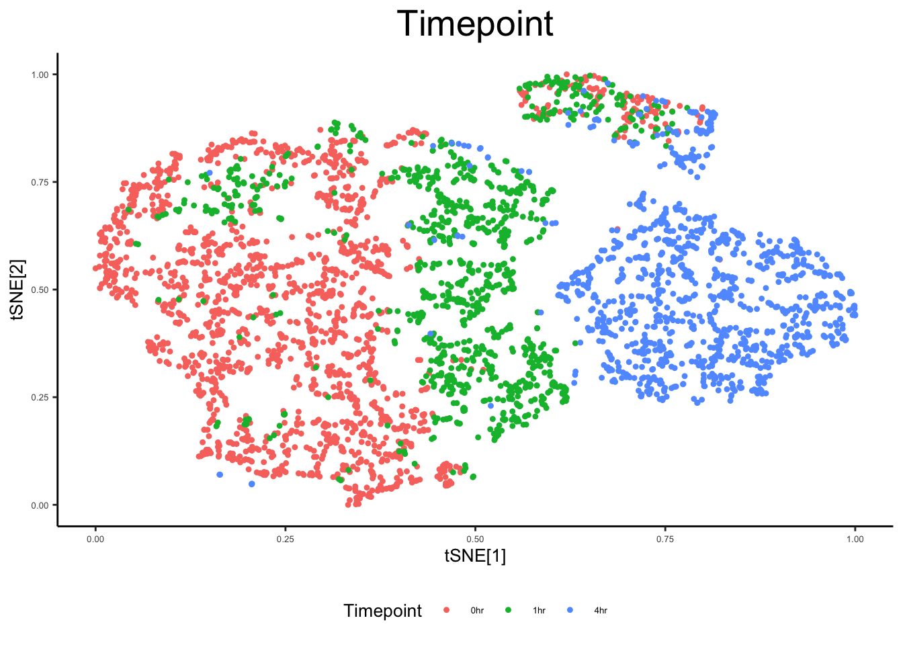
ex_sc <- dim_reduce(ex_sc, genelist = gene_subset, pre_reduce = "iPCA", nComp = 12, tSNE_perp = 30, iterations = 500, print_progress=FALSE)
plot_tsne_metadata(ex_sc, color_by = "Timepoint") 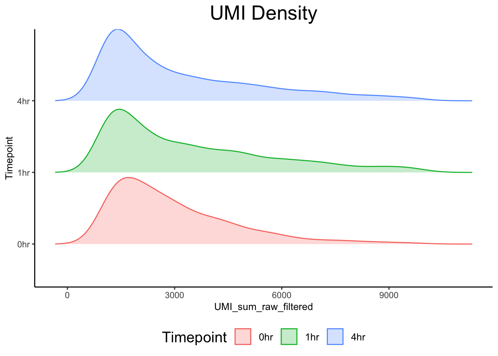
plot_tsne_metadata(ex_sc, color_by = "iPC_Comp1", title = "PC1 cell loadings") 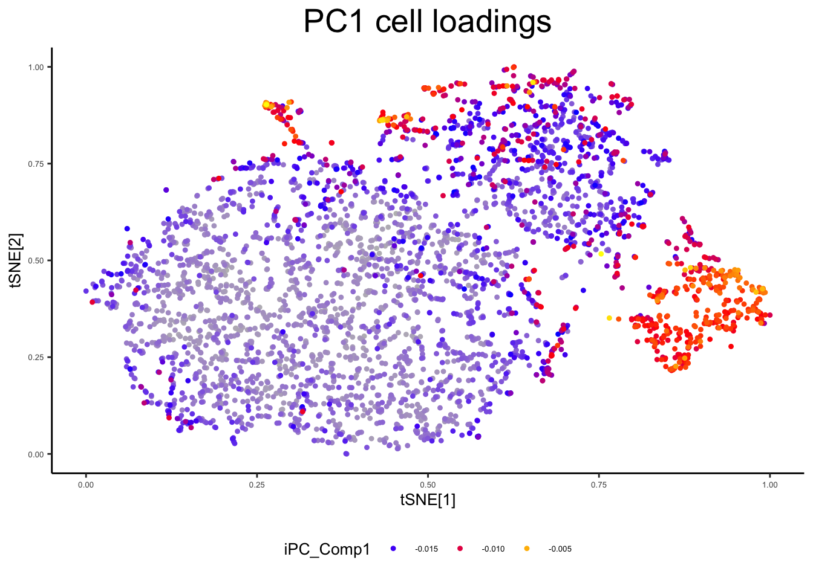
plot_tsne_metadata(ex_sc, color_by = "iPC_Comp2", title = "PC2 cell loadings") 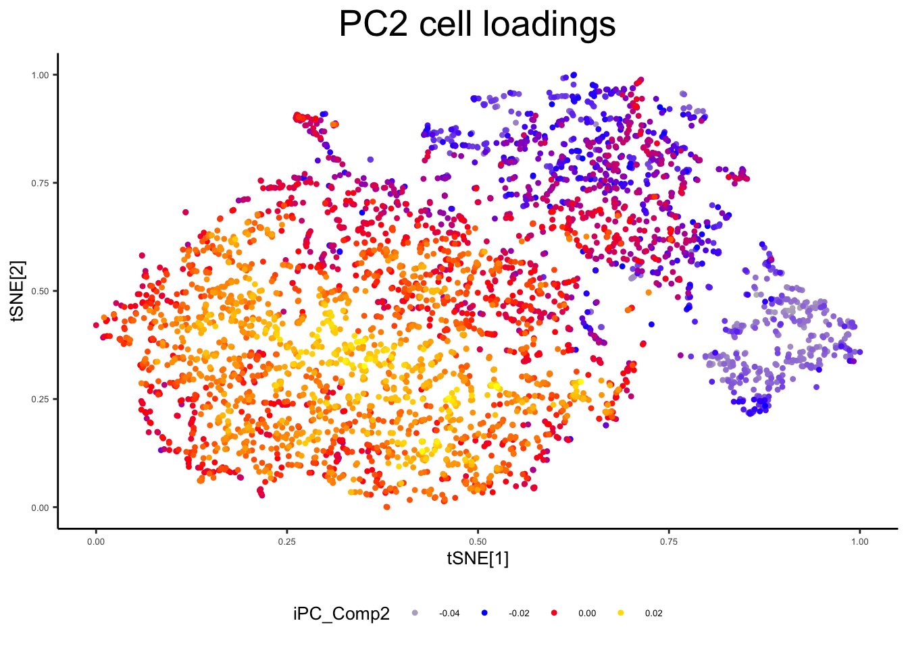
plot_tsne_metadata(ex_sc, color_by = "iPC_Comp3", title = "PC3 cell loadings") 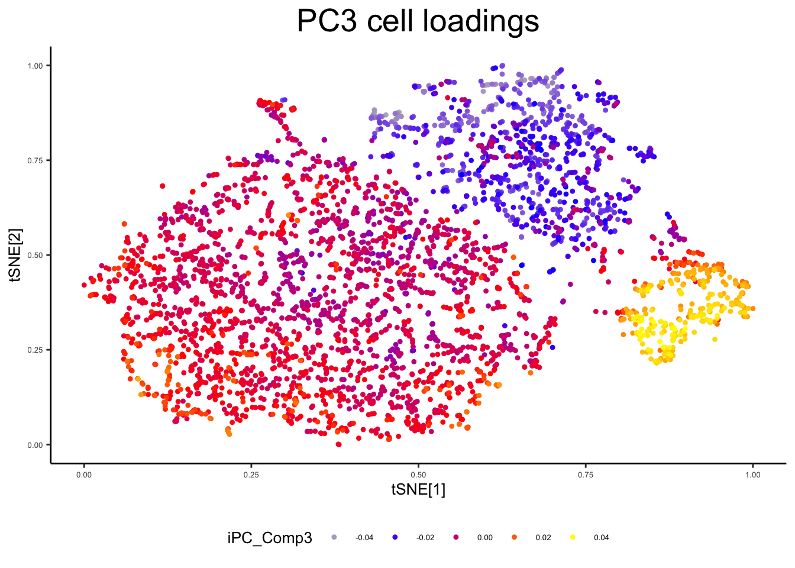
Clustering
Now that we have dimension reduced data we can try clustering it! For dimensions, both Comp and 2d are supported. There will determine if the clustering is done on principal components, or on the 2D representation. There are also 2 clustering algorithms available, density and spectral. Typically we recommend spectral clustering on PCA components, or density clustering on the 2d representation. Try both!
ex_sc <- cluster_sc(ex_sc, dimension = "Comp", method = "spectral", num_clust = 4)
ex_sc$cluster_spectral <- ex_sc$Cluster
ex_sc <- cluster_sc(ex_sc, dimension = "2d", method = "density", num_clust = 4) Distance cutoff calculated to 0.05082406 ex_sc$cluster_density <- ex_sc$Cluster
plot_tsne_metadata(ex_sc, color_by = "cluster_spectral")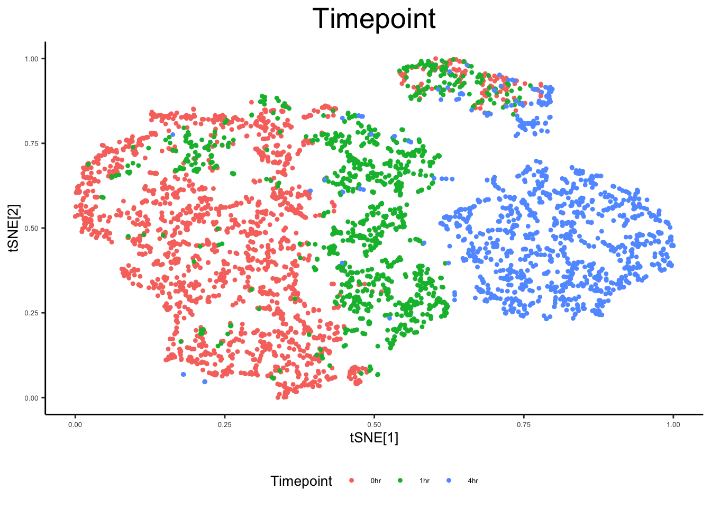
plot_tsne_metadata(ex_sc, color_by = "cluster_density")
Cell Type identification
There are many possible ways to identify cell types based on their gene expression. The id_markers function will identify genes that are highly expressed in a high proportion of a given cluster, relative to the other clusters.
ex_sc <- id_markers(ex_sc, print_progress = TRUE) [1] "Finding markers based on fraction expressing"
[1] "Finding markers based on mean expressing"
[1] "Merging Lists"ex_sc <- calc_agg_bulk(ex_sc, aggregate_by = "Cluster")
markers <- return_markers(ex_sc, num_markers = 15)
plot_heatmap(ex_sc, genes = unique(unlist(markers)), type = "bulk")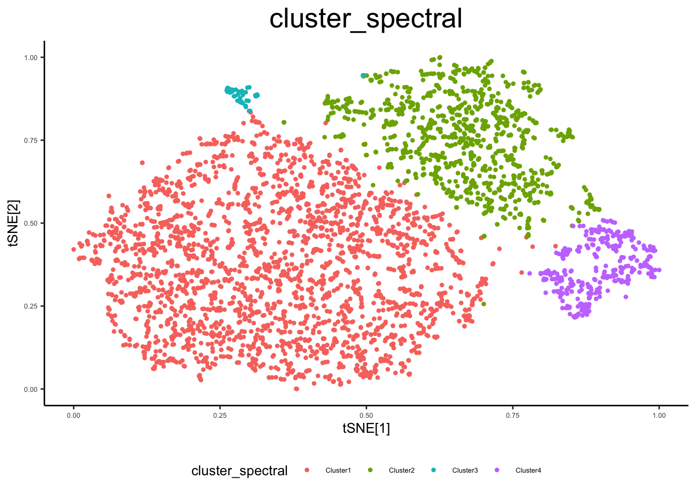
Normalization
Now that the data has preliminary clusters, we can normalize. SCRAN normalization will first normalize internally in clusters, before normalizing across clusters. Once the data is normalized we can run the same steps as above before visualization. The first step is to select the genes to be used for normalization. One method would be to first only use genes expressed in more than n cells, and then remove the most variable genes. This method can be computationally expensive, and is currently commented out. A simpler approach, counts per million, is also provided below.
table(pData(ex_sc)$Cluster)
Cluster1 Cluster2 Cluster3 Cluster4
962 736 362 1752 # ex_sc_norm <- norm_sc(ex_sc, pool_sizes = c(20,25,30,35,40))
x <- exprs(ex_sc)
cSum <- apply(x,2,sum) # sum counts for each cell
x <- as.matrix(sweep(x,2,cSum,FUN='/'))*1e4 # normalize to UMIs per 10k
ex_sc_norm <- construct_ex_sc(x) # Make a new expression set with normalized counts
pData(ex_sc_norm) <- pData(ex_sc) # Copy over the pData
ex_sc_norm <- calc_libsize(ex_sc_norm, suffix = "CP10k")
plot_tsne_metadata(ex_sc_norm, color_by = "UMI_sum_raw")
plot_tsne_metadata(ex_sc_norm, color_by = "UMI_sum_CP10k")
Advanced scRNA-seq analysis
Supervised Analysis
From the above analysis, it is clear that some clusters are formed based on their cell type, while others are based on their experimental condition. In these cases it can be useful to incorporate prior information in order to obtain clusters and annotations that are grounded in biological significance. Below, we can assign “panels” similar to flow cytometry, that will enable cell groupings based on the expression of genes that you believe to signify biologically relevant cell types.
panel1 <- c("S100a9", "Mmp9") # Neutrophil Markers
panel2 <- c("Ccr7", "Fscn1", "Flt3") # DC
panel3 <- c("Mertk", "Csf1r") # Mac
panels <- list(panel1, panel2, panel3)
plot_tsne_gene(ex_sc_norm, gene = panels[[1]], title = "", log_scale = T)
plot_tsne_gene(ex_sc_norm, gene = panels[[2]], title = "", log_scale = T)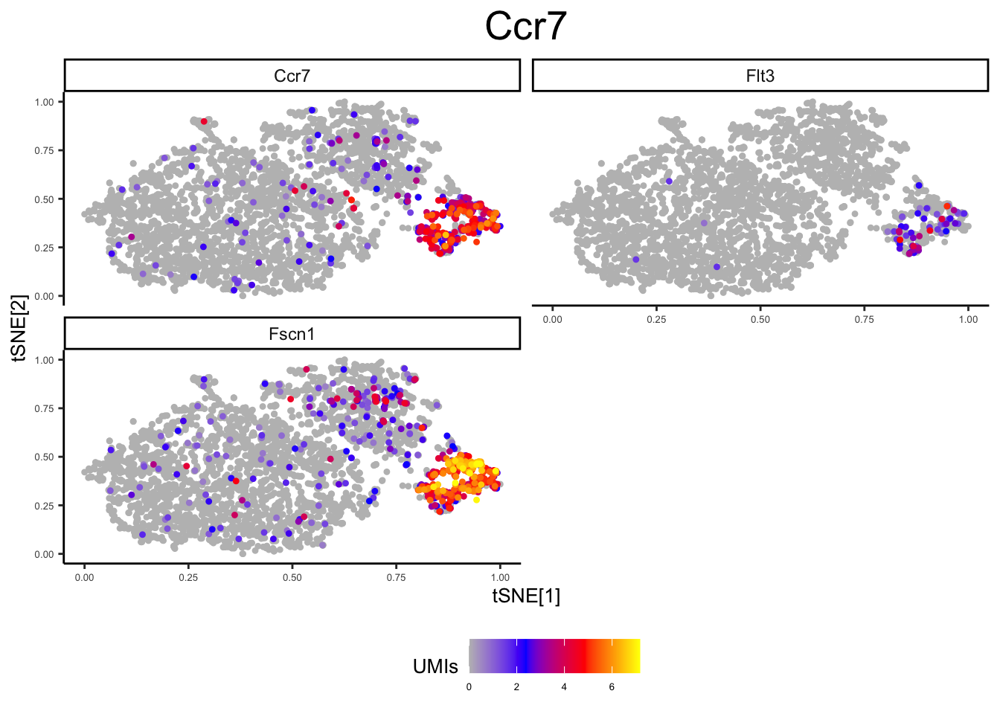
plot_tsne_gene(ex_sc_norm, gene = panels[[3]], title = "", log_scale = T)
names(panels) <- c("Neutrophil", "Dendritic", "Macrophage")
panels$Neutrophil
[1] "S100a9" "Mmp9"
$Dendritic
[1] "Ccr7" "Fscn1" "Flt3"
$Macrophage
[1] "Mertk" "Csf1r"ex_sc_norm <- flow_filter(ex_sc_norm, panels = panels, title = "Flow Pass Cells")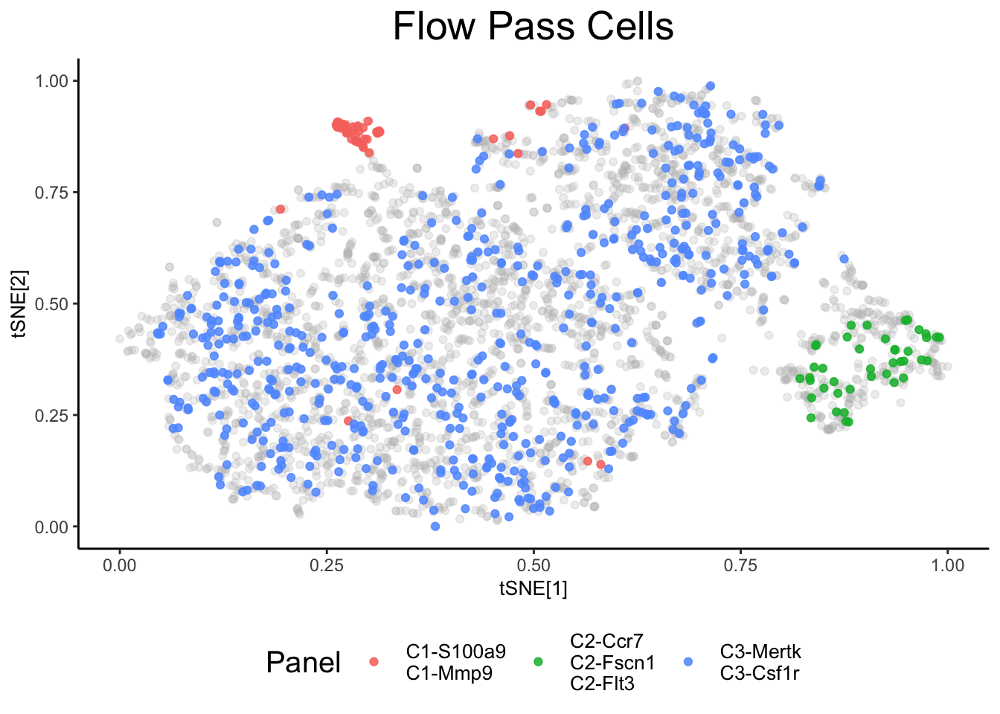
ex_sc_norm <- flow_svm(ex_sc_norm, pcnames = "Comp")Loading required package: latticeplot_tsne_metadata(ex_sc_norm, color_by = "cluster_spectral", facet_by = "Timepoint")
plot_tsne_metadata(ex_sc_norm, color_by = "SVM_Classify")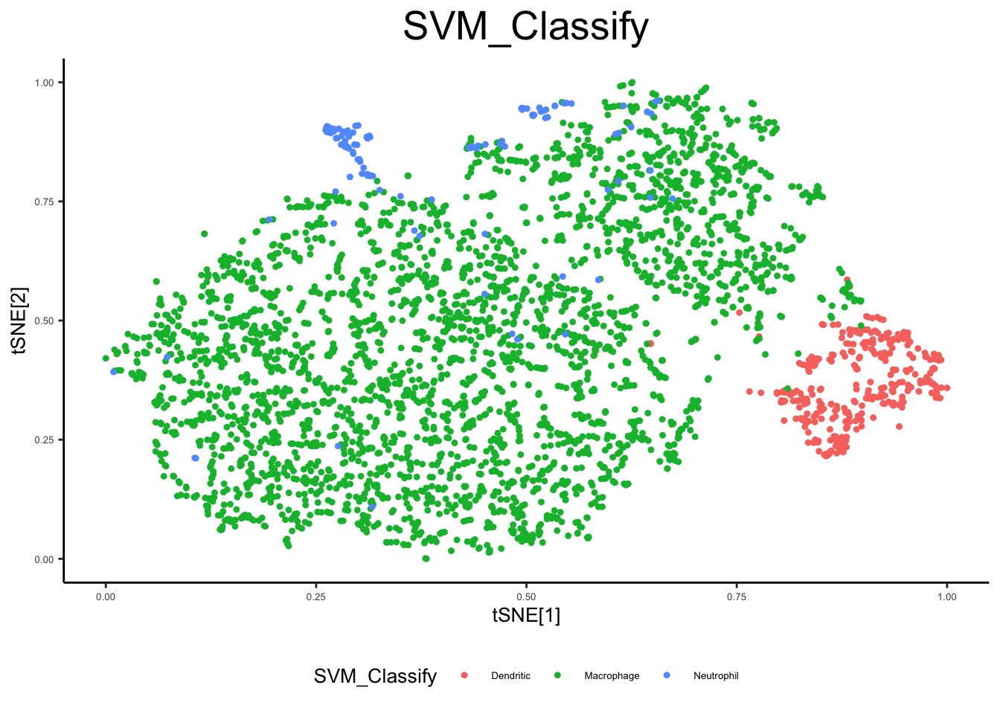
DE analysis
Now that cells are grouped by their cell type, we can run DE in order to determine which genes are change in association with our experimental conditions.
For simplicity we can subset to 0hr and 4hr, to find the genes that change between these conditions.
It should be noted that DE should always be run on raw counts, not on the normalized counts!
ex_sc_norm_0_4 <- subset_ex_sc(ex_sc_norm, variable = "Timepoint", select = c("0hr", "4hr"))[1] "Subsetted Data is 2808 cells"
0hr 4hr
1729 1079 table(pData(ex_sc_norm_0_4)[,c("SVM_Classify", "Timepoint")]) Timepoint
SVM_Classify 0hr 4hr
Dendritic 115 109
Macrophage 1582 921
Neutrophil 32 49findDEgenes(input = ex_sc,
pd = pData(ex_sc_norm_0_4),
DEgroup = "Timepoint",
contrastID = "4hr",
facet_by = "SVM_Classify",
outdir = "~/Downloads/")[1] "Performing DE for Dendritic"Calculating norm factors...Estimating dispersion...Doing likelihood ratio fit...[1] "Performing DE for Macrophage"Calculating norm factors...Estimating dispersion...Doing likelihood ratio fit...[1] "Performing DE for Neutrophil"Calculating norm factors...Estimating dispersion...Doing likelihood ratio fit...# Macrophages
g <- plot_volcano(de_path = "~/Downloads/", de_file = "Macrophage_4hr_DEresults.tsv", fdr_cut = 1E-150, logfc_cut = 1)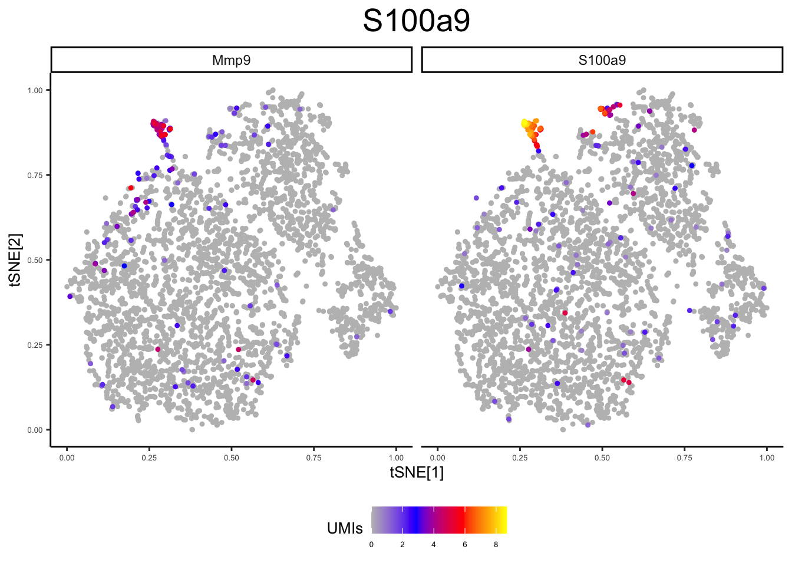
plot(g)
mac_de <- unique(g$data$label)
mac_de <- mac_de[-which(mac_de == "")]
plot_violin(ex_sc_norm_0_4, color_by = "Timepoint", facet_by = "SVM_Classify", gene = "Rsad2")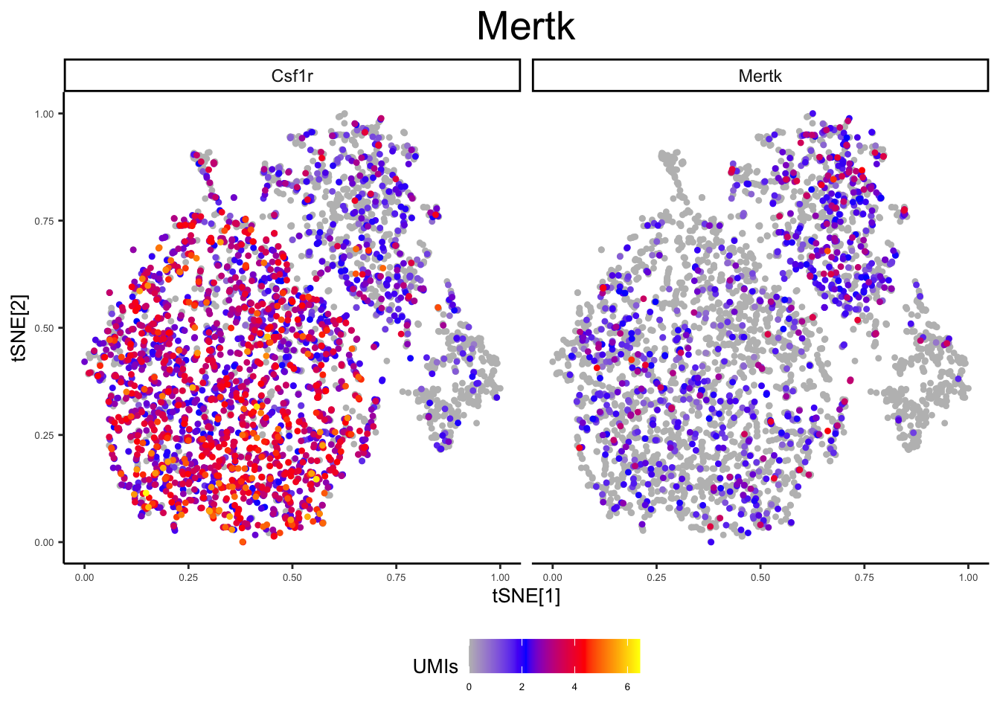
# DCs
g <- plot_volcano(de_path = "~/Downloads/", de_file = "Dendritic_4hr_DEresults.tsv", fdr_cut = 0.0001, logfc_cut = 2)
plot(g)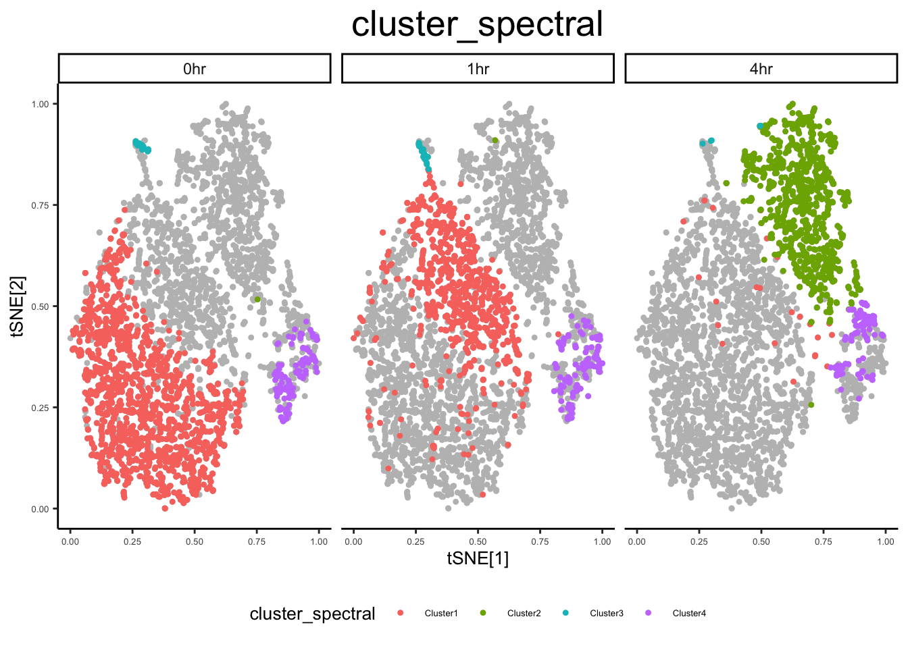
dc_de <- unique(g$data$label)
dc_de <- dc_de[-which(dc_de == "")]
plot_violin(ex_sc_norm_0_4, color_by = "Timepoint", facet_by = "SVM_Classify", gene = "Ifit1")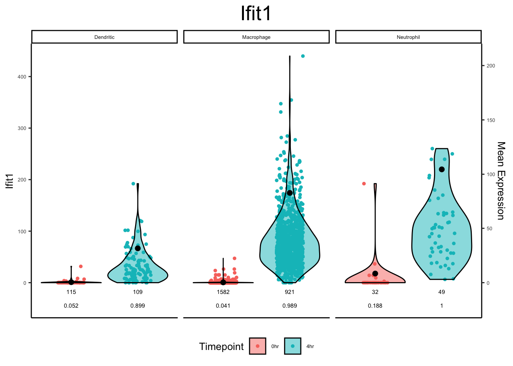
# Neutrophils
g <- plot_volcano(de_path = "~/Downloads/", de_file = "Neutrophil_4hr_DEresults.tsv", fdr_cut = 1E-5, logfc_cut = 3)
plot(g)
neut_de <- unique(g$data$label)
neut_de <- neut_de[-which(neut_de == "")]
plot_violin(ex_sc_norm_0_4, color_by = "Timepoint", facet_by = "SVM_Classify", gene = "Mmp9")
# Heatmap of these DE genes
all_de <- c(mac_de, dc_de, neut_de)
unique(all_de) [1] "Rsad2" "Cxcl10" "Ccl4" "Ifit1"
[5] "Ccl5" "Cmpk2" "Il1b" "Il12b"
[9] "Ccl3" "Ifit2" "Irg1" "Il1a"
[13] "Oasl1" "Il6" "Cd69" "Cxcl2"
[17] "Cxcl3" "Tnfsf15" "Tnf" "Cd40"
[21] "Ccnd2" "Saa3" "Ptx3" "Mx1"
[25] "Socs3" "Gbp5" "Slc7a2" "Ifih1"
[29] "Sdc4" "Ifit3" "Clec4e" "Ifi47"
[33] "Nos2" "Ch25h" "Isg15" "Socs1"
[37] "Ifi205" "Plek" "Gm14446" "Gbp2"
[41] "Iigp1" "Marcksl1" "Plet1" "Tnfaip3"
[45] "AA467197" "Serpina3g" "Ptgs2" "Usp18"
[49] "Clic4" "Ccl2" "Pyhin1" "Trim30a"
[53] "Slfn5" "Oasl2" "Slco3a1" "Inhba"
[57] "Gbp7" "Mndal" "Irgm1" "Irf7"
[61] "Ifi203" "Mnda" "Cav1" "Il1rn"
[65] "Wdr92" "Cd14" "Ccrl2" "Slc7a11"
[69] "Ifi204" "Nt5c3" "Parp14" "Cd274"
[73] "Cfb" "Gbp3" "Gm12250" "Helz2"
[77] "Peli1" "Acsl1" "Il15" "Ddx58"
[81] "Jak2" "Vcan" "Fam26f" "Cflar"
[85] "Gm4951" "Gadd45b" "Ms4a4c" "Sh3bp5"
[89] "Pim1" "Trim30d" "Rtp4" "Gbp4"
[93] "Daxx" "Pnp" "Slamf7" "Igtp"
[97] "Ehd1" "Tap1" "Sod2" "Bcl2a1b"
[101] "Bcl2a1a" "Nfkbia" "Znfx1" "Tnfaip2"
[105] "Slfn2" "Csf1r" "Srgn" "Ftl1"
[109] "Dusp2" "Fgl2" "Ccl17" "Lgals9"
[113] "Cxcl9" "Cited2" "Parp9" "Bcl2l11"
[117] "Ccl9" "Dck" "Sp100" "Cd86"
[121] "Bcl2l1" "Ebi3" "Cd70" "Alcam"
[125] "Ndrg2" "Dhx58" "Prkx" "Xaf1"
[129] "Snx2" "Irgm2" "Nampt" "Flt3"
[133] "Dnajc5" "Cd53" "Tcf4" "Tra2a"
[137] "Phf11b" "Vopp1" "Pfkp" "Zbp1"
[141] "Parp12" "Ramp3" "Lacc1" "Mylk"
[145] "Ehd4" "Usp25" "Stat5a" "AI607873"
[149] "Flnb" "Bbx" "Herc6" "Rapgef2"
[153] "Tnip3" "Prkrir" "Fn1" "Lcn2"
[157] "Pla1a" "Ranbp2" "Rfk" "Cd81"
[161] "Pea15a" "Tor1aip1" "Retnlg" "Lipg"
[165] "Ccl7" "H2-M2" "Slfn4" "Cycs"
[169] "Stat2" "4632428N05Rik" "Hist1h1c" "Mmp9"
[173] "Tagap" "Add3" "Cdc42ep3" "Cnn2"
[177] "Fam101b" "Cd300lb" "Mt2" "Nfkbiz"
[181] "Cxcl11" "Slc2a3" "Mapkapk2" "R3hdm4"
[185] "Msl1" "Tor3a" "Zfp36l2" "Csf3r"
[189] "Capza2" ex_sc_norm <- calc_agg_bulk(ex_sc_norm, aggregate_by = c("Timepoint", "SVM_Classify"))
plot_heatmap(ex_sc_norm, genes = c(mac_de, dc_de, neut_de), type = "bulk", facet_by = "SVM_Classify", gene_names = F)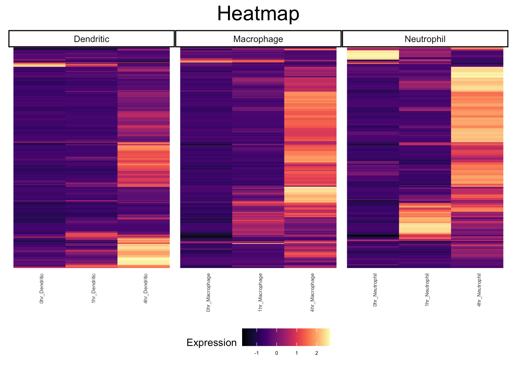
Human Vitiligo Data
We performed scRNA data analysis using SignallingSingleCell on affected and unaffected skin from vitiligo patients, as well as healthy controls, to define the role of each cell type in coordinating autoimmunity during disease progression.
Data Description
The data was generated using suction blistering followed by scRNA-seq on 10 subjects with active vitiligo (treatment-naïve for at least 6 months) and 7 healthy individuals. For each vitiligo subject, we collected 2 sets of blisters, one lesional sample from affected skin and one non-lesional sample from unaffected skin, located at least 10cm away from any visible lesion.
You can find more details in,
https://www.science.org/doi/10.1126/scitranslmed.abd8995
For convenience we are providing 3 processed data tables here. One is a raw sparse matrix, that is the output of our processing pipeline with no further manipulation. We are also providing a fully processed UMI table that has been filtered, dimension reduced, clustered, and normalized. The processed UMI table is provided in the expression set class format (https://www.bioconductor.org/packages/devel/bioc/vignettes/Biobase/inst/doc/ExpressionSetIntroduction.pdf). We are also providing a separate processed UMI table for the T Cells.
The raw .fastq files have been deposited through dbGAP.
https://www.ncbi.nlm.nih.gov/projects/gap/cgi-bin/study.cgi?study_id=phs002455.v1.p1
These files are protected, and you will need an account and to request access to download the files. As of 10/5/21 the data files are processing on the dbGAP server.
Download Links
# devtools::install_github("garber-lab/SignallingSingleCell")
library(SignallingSingleCell)
library(kernlab)
# load(url("https://www.dropbox.com/s/y967oe6vwk1jue2/phs002455.v1.p1_UMITable.Rdata?dl=1")) # The Raw Data
load(url("https://www.dropbox.com/s/s49jt231j9gib5u/phs002455_processed_UMItable.Rdata?dl=1"))
load(url("https://www.dropbox.com/s/clcd7oref1yil5x/phs002455_TCells_processed_UMItable.Rdata?dl=1"))Data Exploration
The ExpressionSet Class
The ExpressionSet class (ex_sc) is a convenient data structure that contains 3 dataframes. These dataframes contain expression data, cell information, and gene information respectively.
exprs(ex_sc) is the expression data, where rows are genes and columns are cells.
pData(ex_sc) is cell information, where rows are cells and columns are metadata.
fData(ex_sc) is gene information, where rows are genes and columns are metadata.
colnames(pData(phs002455_processed_UMItable)) [1] "Patient" "Disease" "Phenotype" "Skin"
[5] "UMI_sum_raw" "x" "y" "Cluster"
[9] "UMI_sum_norm" "CellType" "Cluster_Fig_1B" "Cluster_Refined"# Columns 1-4 are all phenotypic metadata related to the patient sample
# Columns 5-12 are all related to cell specific metadata such as tSNE coordinates, Clusters, etc
colnames(fData(phs002455_processed_UMItable)) [1] "CD8_marker_score_Cluster_Refined"
[2] "DC_marker_score_Cluster_Refined"
[3] "GD_marker_score_Cluster_Refined"
[4] "KRT-B1_marker_score_Cluster_Refined"
[5] "KRT-B2_marker_score_Cluster_Refined"
[6] "KRT-ECR_marker_score_Cluster_Refined"
[7] "KRT-GR_marker_score_Cluster_Refined"
[8] "KRT-SP_marker_score_Cluster_Refined"
[9] "MAC_marker_score_Cluster_Refined"
[10] "MEL_marker_score_Cluster_Refined"
[11] "NK_marker_score_Cluster_Refined"
[12] "TConv_marker_score_Cluster_Refined"
[13] "Treg_marker_score_Cluster_Refined" # The only thing stored in fData right now are cluster marker scores.
# These were calculated with id_markers()Figure 1B
Reproduce Figure 1B from https://www.science.org/doi/10.1126/scitranslmed.abd8995
plot_tsne_metadata(phs002455_processed_UMItable, color_by = "Cluster_Fig_1B", shuffle = T)
plot_tsne_gene(phs002455_processed_UMItable, gene = c("TRAC", "TYR"))
# Additional plots
plot_violin(phs002455_processed_UMItable, gene = c("IFNG"), color_by = "Skin", facet_by = "Cluster_Refined")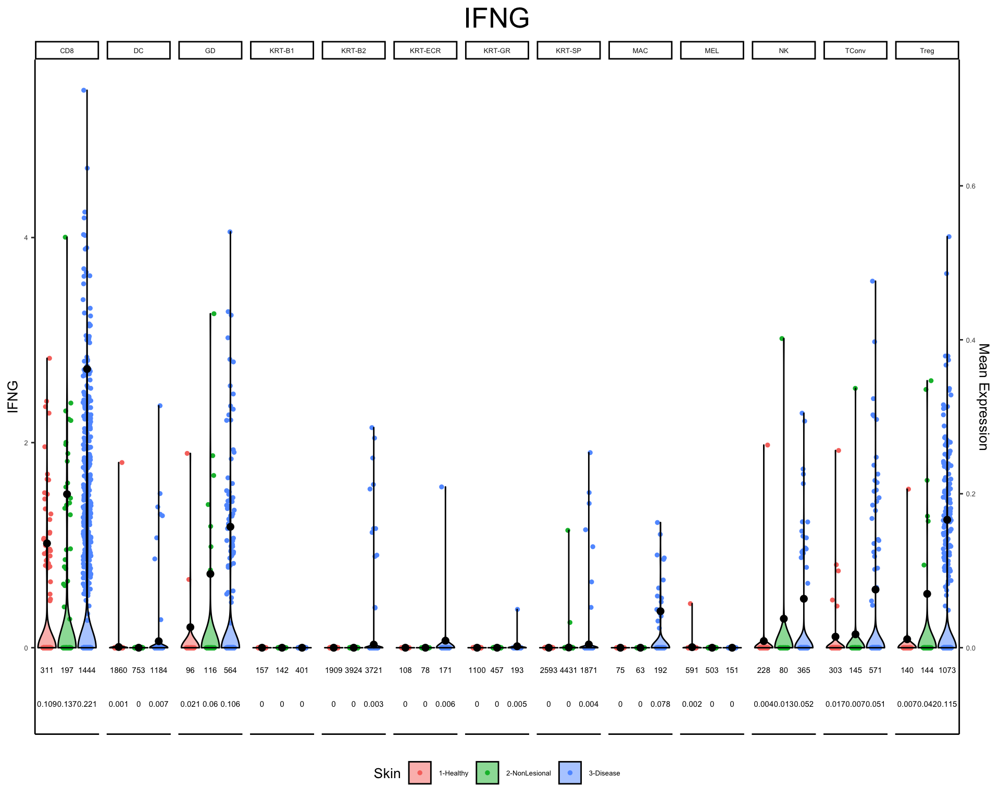
markers <- return_markers(phs002455_processed_UMItable, return_by = "Cluster_Refined", num_markers = 5)
markers$CD8_Markers
[1] "CD8A" "NKG7" "CCL5" "CD8B" "CD3D"
$DC_Markers
[1] "CD207" "CD1A" "FCER1A" "HLA-DQB2" "AIF1"
$GD_Markers
[1] "TARP" "TRGC1" "CD8A" "CCL5" "TRGC2"
$`KRT-B1_Markers`
[1] "CYR61" "COL17A1" "POSTN" "SYT8" "RND3"
$`KRT-B2_Markers`
[1] "S100A2" "KRT15" "CCDC3" "TP63" "MIR205HG"
$`KRT-ECR_Markers`
[1] "KRT6B" "MUCL1" "S100P" "MMP7" "KRT77"
$`KRT-GR_Markers`
[1] "KRT2" "LGALS7" "SBSN" "KLK11" "KRTDAP"
$`KRT-SP_Markers`
[1] "KRTDAP" "LGALS7" "LGALS7B" "SBSN" "DMKN"
$MAC_Markers
[1] "CLEC10A" "FPR3" "LGALS2" "LYZ" "CPVL"
$MEL_Markers
[1] "APOD" "TYR" "BCAN" "DCT" "PLP1"
$NK_Markers
[1] "SPINK2" "XCL1" "CTSW" "KLRB1" "TRDC"
$TConv_Markers
[1] "IL32" "TRBC2" "CD3D" "CD6" "CD48"
$Treg_Markers
[1] "CD27" "CD3D" "IL32" "TRBC2" "CTLA4"plot_gene_dots(phs002455_processed_UMItable, genes = unique(unlist(markers)), break_by = "Cluster_Refined")
Figure 1C
Reproduce Figure 1C from https://www.science.org/doi/10.1126/scitranslmed.abd8995
plot_tsne_metadata(phs002455_TCells_processed_UMItable, color_by = "Cluster", shuffle = T)
plot_tsne_gene(phs002455_TCells_processed_UMItable, gene = c("TRAC", "CD4", "CD8A", "FOXP3", "TRGC1", "FCER1G"))
# To create the aggregate bulk heatmaps first calculate the aggregate bulk values
phs002455_TCells_processed_UMItable <- calc_agg_bulk(phs002455_TCells_processed_UMItable, aggregate_by = "Cluster")
# Then identify markers
phs002455_TCells_processed_UMItable <- id_markers(phs002455_TCells_processed_UMItable, id_by = "Cluster", overwrite = T)[1] "Finding markers based on fraction expressing"
[1] "Finding markers based on mean expressing"
[1] "Merging Lists"markers <- return_markers(phs002455_TCells_processed_UMItable)
markers$CD8_Markers
[1] "CD8A" "GZMH" "CD8B" "NKG7" "GZMK" "GZMB" "EOMES" "GZMA" "CCL4"
[10] "CCL5"
$GD_Markers
[1] "TARP" "TRGC1" "TRGC2" "KLRC3" "CD8A" "CD8B" "NKG7"
[8] "FXYD2" "KIR3DL2" "KLRC2"
$NK_Markers
[1] "SPINK2" "FCER1G" "XCL2" "KLRF2" "XCL1" "MB"
[7] "TMPRSS11E" "KRT81" "SPTSSB" "TRDC"
$TConv_Markers
[1] "CD40LG" "CD4" "CD6" "CCR6" "TNFRSF25" "ADAM19"
[7] "IL26" "CTSH" "HLF" "RORA"
$Treg_Markers
[1] "CD4" "FOXP3" "CTLA4" "GBP5" "TBC1D4" "TIGIT" "CD27" "LAIR2"
[9] "IKZF4" "F5" markers <- unique(unlist(markers))Now create a heatmap using these values
plot_heatmap(phs002455_TCells_processed_UMItable, type = "bulk", genes = markers)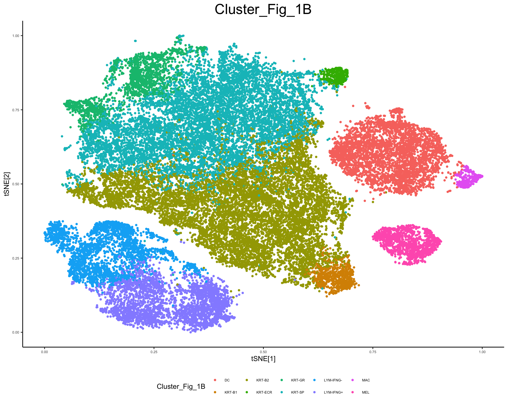
Basic Network Analysis
Annotate Ligands and Receptors
These functions are still in development, but we have included them for illustration purposes. The goal is to take aggregate bulk CPM values derived from scRNA-seq, cross reference them to a database of ligand and receptor pairs (Ramilowski, Jordan A et al. “A draft network of ligand-receptor-mediated multicellular signalling in human.” Nature communications vol. 6 7866. 22 Jul. 2015, doi:10.1038/ncomms8866), and then construct a network. The first step is to calculate the aggregate bulk CPM values, followed by annotating the ligands and receptors in the data.
# This function is calculating our aggregate bulk CPM values. We have some thresholds (25 CPM or the value will be set to 0, and 15 minimum cells expressing within the group or the value set to 0). This is to greatly reduce the complexity of the network, and reduce spurious nodes with little supporting data.
phs002455_processed_UMItable <- calc_agg_bulk(phs002455_processed_UMItable, aggregate_by = c("Skin", "Cluster_Refined"), group_by = "Skin", cutoff_cpm = 25, cutoff_num = 15)
# The aggregate bulk data is written into fData()
colnames(fData(phs002455_processed_UMItable))[14:ncol(fData(phs002455_processed_UMItable))] [1] "1-Healthy_CD8_num_genes_11521_num_cells_311_percent_3.28_bulk"
[2] "2-NonLesional_CD8_num_genes_10925_num_cells_197_percent_1.79_bulk"
[3] "3-Disease_CD8_num_genes_13319_num_cells_1444_percent_12.13_bulk"
[4] "1-Healthy_DC_num_genes_12950_num_cells_1860_percent_19.64_bulk"
[5] "2-NonLesional_DC_num_genes_11836_num_cells_753_percent_6.82_bulk"
[6] "3-Disease_DC_num_genes_12558_num_cells_1184_percent_9.95_bulk"
[7] "1-Healthy_GD_num_genes_9552_num_cells_96_percent_1.01_bulk"
[8] "2-NonLesional_GD_num_genes_9891_num_cells_116_percent_1.05_bulk"
[9] "3-Disease_GD_num_genes_12381_num_cells_564_percent_4.74_bulk"
[10] "1-Healthy_KRT-B1_num_genes_8841_num_cells_157_percent_1.66_bulk"
[11] "2-NonLesional_KRT-B1_num_genes_8561_num_cells_142_percent_1.29_bulk"
[12] "3-Disease_KRT-B1_num_genes_10920_num_cells_401_percent_3.37_bulk"
[13] "1-Healthy_KRT-B2_num_genes_12948_num_cells_1909_percent_20.16_bulk"
[14] "2-NonLesional_KRT-B2_num_genes_13707_num_cells_3924_percent_35.57_bulk"
[15] "3-Disease_KRT-B2_num_genes_13762_num_cells_3721_percent_31.27_bulk"
[16] "1-Healthy_KRT-ECR_num_genes_7783_num_cells_108_percent_1.14_bulk"
[17] "2-NonLesional_KRT-ECR_num_genes_6756_num_cells_78_percent_0.71_bulk"
[18] "3-Disease_KRT-ECR_num_genes_8872_num_cells_171_percent_1.44_bulk"
[19] "1-Healthy_KRT-GR_num_genes_12351_num_cells_1100_percent_11.61_bulk"
[20] "2-NonLesional_KRT-GR_num_genes_11157_num_cells_457_percent_4.14_bulk"
[21] "3-Disease_KRT-GR_num_genes_10234_num_cells_193_percent_1.62_bulk"
[22] "1-Healthy_KRT-SP_num_genes_13079_num_cells_2593_percent_27.38_bulk"
[23] "2-NonLesional_KRT-SP_num_genes_13648_num_cells_4431_percent_40.16_bulk"
[24] "3-Disease_KRT-SP_num_genes_12802_num_cells_1871_percent_15.72_bulk"
[25] "1-Healthy_MAC_num_genes_10720_num_cells_75_percent_0.79_bulk"
[26] "2-NonLesional_MAC_num_genes_10462_num_cells_63_percent_0.57_bulk"
[27] "3-Disease_MAC_num_genes_12454_num_cells_192_percent_1.61_bulk"
[28] "1-Healthy_MEL_num_genes_13299_num_cells_591_percent_6.24_bulk"
[29] "2-NonLesional_MEL_num_genes_13235_num_cells_503_percent_4.56_bulk"
[30] "3-Disease_MEL_num_genes_11742_num_cells_151_percent_1.27_bulk"
[31] "1-Healthy_NK_num_genes_11275_num_cells_228_percent_2.41_bulk"
[32] "2-NonLesional_NK_num_genes_9811_num_cells_80_percent_0.73_bulk"
[33] "3-Disease_NK_num_genes_12048_num_cells_365_percent_3.07_bulk"
[34] "1-Healthy_TConv_num_genes_11591_num_cells_303_percent_3.2_bulk"
[35] "2-NonLesional_TConv_num_genes_10372_num_cells_145_percent_1.31_bulk"
[36] "3-Disease_TConv_num_genes_12256_num_cells_571_percent_4.8_bulk"
[37] "1-Healthy_Treg_num_genes_10566_num_cells_140_percent_1.48_bulk"
[38] "2-NonLesional_Treg_num_genes_10429_num_cells_144_percent_1.31_bulk"
[39] "3-Disease_Treg_num_genes_13003_num_cells_1073_percent_9.02_bulk" # This function will now cross reference the ligand and receptor database, and then annotate this information into fData
phs002455_processed_UMItable <- id_rl(phs002455_processed_UMItable)
# The ligand and receptor annotations are written into fData(). The IFNG entries are highlighted below.
fData(phs002455_processed_UMItable)[c("IFNG", "IFNGR1", "IFNGR2"),c(53:56)] networks_Receptors networks_ligands networks_ligs_to_receptor
IFNG FALSE TRUE <NA>
IFNGR1 TRUE FALSE IFNG
IFNGR2 TRUE FALSE IFNG
networks_receptor_to_ligs
IFNG IFNGR1_IFNGR2
IFNGR1 <NA>
IFNGR2 <NA>Plot Ligands
vals <- which(fData(phs002455_processed_UMItable)[,"networks_ligands"])
ligs <- rownames(fData(phs002455_processed_UMItable))[vals]
length(ligs)[1] 278plot_heatmap(phs002455_processed_UMItable, genes = ligs, type = "bulk", cluster_by = "row",facet_by = "Cluster_Refined", pdf_format = "tile", scale_by = "row", cluster_type = "kmeans", k = 15)
Plot Receptors
vals <- which(fData(phs002455_processed_UMItable)[,"networks_Receptors"])
recs <- rownames(fData(phs002455_processed_UMItable))[vals]
length(recs)[1] 319plot_heatmap(phs002455_processed_UMItable, genes = recs, type = "bulk", cluster_by = "row",facet_by = "Cluster_Refined", pdf_format = "tile", scale_by = "row", cluster_type = "kmeans", k = 15)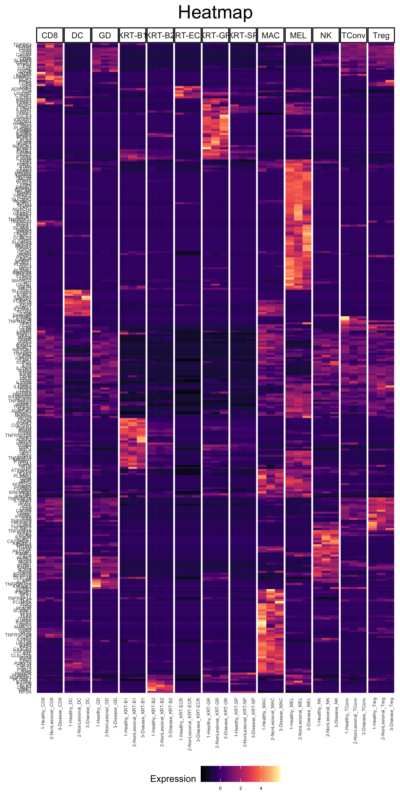
Build ligand and receptor table
Now we can calculate the long format network table. Please note this step is slow and poorly optimized… it needs to be rewritten. On my laptop it takes about 30 minutes to run.
Please keep in mind the network scales exponentially with the number of groups you provide. For each individual ligand or receptor, a node is created when the cell type expresses it, and an edge between all of its expressed pairs. This means that if 5 cells express ligand A which binds to receptor B, there will be 5 ligand A nodes, and an edge from each of them to receptor B node. The more promiscuous a given ligand and receptor interaction, and the more cell types in the data, this network quickly explodes to become unmanageable in size.
We have found 10-15 cell types is the upper limit of what can be done on a local computer without needing a cluster environment.
For convenience a download link to the output file is provided below, however you may opt to run the command on your own.
### Warning Slow!!! Use provided output table for speed. The command is left commented for speed reasons ###
# network_table <- calc_rl_connections(phs002455_processed_UMItable, nodes = "Cluster_Refined", group_by = "Skin", print_progress = T)
load(url("https://www.dropbox.com/s/p30mwg5pcj58cc6/network_table.Rdata?dl=1"))
str(network_table)List of 3
$ Summary :'data.frame': 507 obs. of 6 variables:
..$ Lig_produce : chr [1:507] "CD8" "CD8" "CD8" "CD8" ...
..$ Rec_receive : chr [1:507] "CD8" "CD8" "CD8" "DC" ...
..$ Skin : chr [1:507] "1-Healthy" "2-NonLesional" "3-Disease" "1-Healthy" ...
..$ num_connections : int [1:507] 133 141 141 113 115 115 107 106 110 69 ...
..$ fraction_connections : num [1:507] 0.01154 0.01291 0.01059 0.00981 0.01053 ...
..$ proportion_connections: num [1:507] 0.0968 0.1004 0.0999 0.0822 0.0819 ...
$ full_network :'data.frame': 47540 obs. of 21 variables:
..$ Cluster_Refined : chr [1:47540] "KRT-SP" "KRT-SP" "KRT-SP" "KRT-SP" ...
..$ Ligand : chr [1:47540] "GPI" "HLA-A" "HLA-B" "APP" ...
..$ Cluster_Refined : chr [1:47540] "KRT-SP" "KRT-SP" "KRT-SP" "KRT-SP" ...
..$ Receptor : chr [1:47540] "AMFR" "APLP2" "CANX" "CAV1" ...
..$ Skin : chr [1:47540] "1-Healthy" "1-Healthy" "1-Healthy" "1-Healthy" ...
..$ Ligand_expression : num [1:47540] 142.5 412.4 959.8 58.1 59.9 ...
..$ Receptor_expression : num [1:47540] 36.1 31.3 190.2 81.4 81.4 ...
..$ Connection_product : num [1:47540] 5150 12928 182571 4726 4876 ...
..$ log10_Connection_product : num [1:47540] 3.71 4.11 5.26 3.67 3.69 ...
..$ Connection_ratio : num [1:47540] 3.946 13.157 5.046 0.714 0.736 ...
..$ log10_Connection_ratio : num [1:47540] 0.596 1.119 0.703 -0.146 -0.133 ...
..$ Connection_rank_coarse : num [1:47540] 1913 1361 308 1971 1957 ...
..$ Connection_Z_coarse : num [1:47540] 2.46 2.76 3.64 2.43 2.44 ...
..$ Connection_rank_coarse_grouped: num [1:47540] 684 493 104 712 705 ...
..$ Connection_Z_coarse_grouped : num [1:47540] 2.41 2.7 3.56 2.38 2.39 ...
..$ Connection_rank_fine : num [1:47540] 92 52 4 99 95 44 63 161 5 187 ...
..$ Connection_Z_fine : num [1:47540] 2.99 3.35 4.38 2.96 2.97 ...
..$ Connection_rank_fine_grouped : num [1:47540] 38 23 2 41 40 19 26 62 3 68 ...
..$ Connection_Z_fine_grouped : num [1:47540] 2.85 3.2 4.18 2.82 2.83 ...
..$ Zscores_genes : num [1:47540] 0.0813 -0.3408 -1.5589 0.9897 1.4664 ...
..$ Zscores_genes_grouped : num [1:47540] 0.0538 -0.3484 -1.528 0.9381 1.5023 ...
$ full_network_raw:'data.frame': 351351 obs. of 21 variables:
..$ Cluster_Refined : chr [1:351351] "KRT-SP" "KRT-SP" "KRT-SP" "KRT-SP" ...
..$ Ligand : chr [1:351351] "CALM1" "CALM2" "CALM3" "LIN7C" ...
..$ Cluster_Refined : chr [1:351351] "KRT-SP" "KRT-SP" "KRT-SP" "KRT-SP" ...
..$ Receptor : chr [1:351351] "ABCA1" "ABCA1" "ABCA1" "ABCA1" ...
..$ Skin : chr [1:351351] "1-Healthy" "1-Healthy" "1-Healthy" "1-Healthy" ...
..$ Ligand_expression : num [1:351351] 409.5 608.3 203.5 32.3 54.3 ...
..$ Receptor_expression : num [1:351351] 0 0 0 0 0 0 0 0 0 0 ...
..$ Connection_product : num [1:351351] 0 0 0 0 0 0 0 0 0 0 ...
..$ log10_Connection_product : num [1:351351] 0 0 0 0 0 0 0 0 0 0 ...
..$ Connection_ratio : num [1:351351] 0 0 0 0 0 0 0 0 0 0 ...
..$ log10_Connection_ratio : num [1:351351] 0 0 0 0 0 0 0 0 0 0 ...
..$ Connection_rank_coarse : num [1:351351] 15109 15109 15109 15109 15109 ...
..$ Connection_Z_coarse : num [1:351351] -0.356 -0.356 -0.356 -0.356 -0.356 ...
..$ Connection_rank_coarse_grouped: num [1:351351] 5035 5035 5035 5035 5035 ...
..$ Connection_Z_coarse_grouped : num [1:351351] -0.357 -0.357 -0.357 -0.357 -0.357 ...
..$ Connection_rank_fine : num [1:351351] 1145 1145 1145 1145 1145 ...
..$ Connection_Z_fine : num [1:351351] -0.327 -0.327 -0.327 -0.327 -0.327 ...
..$ Connection_rank_fine_grouped : num [1:351351] 382 382 382 382 382 382 382 382 382 382 ...
..$ Connection_Z_fine_grouped : num [1:351351] -0.329 -0.329 -0.329 -0.329 -0.329 ...
..$ Zscores_genes : num [1:351351] -0.288 -0.288 -0.288 -0.263 -0.191 ...
..$ Zscores_genes_grouped : num [1:351351] -0.288 -0.288 -0.288 -0.263 -0.19 ...# The lists contains 3 entries.
# Summary provides a high level view of the number of connections between cell types.
# full_network is the same as full_network_raw, except that full_network_raw will preserve entries where either the ligand or receptor is 0 in expression.
head(network_table$full_network) Cluster_Refined Ligand Cluster_Refined Receptor Skin Ligand_expression
27 KRT-SP GPI KRT-SP AMFR 1-Healthy 142.54554
28 KRT-SP HLA-A KRT-SP APLP2 1-Healthy 412.41139
46 KRT-SP HLA-B KRT-SP CANX 1-Healthy 959.83108
48 KRT-SP APP KRT-SP CAV1 1-Healthy 58.08089
50 KRT-SP CYR61 KRT-SP CAV1 1-Healthy 59.91347
51 KRT-SP GNAI2 KRT-SP CAV1 1-Healthy 195.81901
Receptor_expression Connection_product log10_Connection_product
27 36.12779 5149.856 3.711795
28 31.34619 12927.527 4.111515
46 190.21150 182570.911 5.261432
48 81.37710 4726.455 3.674535
50 81.37710 4875.584 3.688027
51 81.37710 15935.183 4.202357
Connection_ratio log10_Connection_ratio Connection_rank_coarse
27 3.9455924 0.5961122 1913
28 13.1566661 1.1191459 1361
46 5.0461254 0.7029580 308
48 0.7137253 -0.1464689 1971
50 0.7362448 -0.1329777 1957
51 2.4063160 0.3813527 1231
Connection_Z_coarse Connection_rank_coarse_grouped
27 2.459681 684
28 2.762894 493
46 3.635177 104
48 2.431417 712
50 2.441651 705
51 2.831803 433
Connection_Z_coarse_grouped Connection_rank_fine Connection_Z_fine
27 2.405913 92 2.994012
28 2.703450 52 3.351666
46 3.559407 4 4.380566
48 2.378178 99 2.960674
50 2.388220 95 2.972745
51 2.771069 44 3.432948
Connection_rank_fine_grouped Connection_Z_fine_grouped Zscores_genes
27 38 2.853324 0.08134314
28 23 3.196009 -0.34080106
46 2 4.181846 -1.55893737
48 41 2.821381 0.98973688
50 40 2.832947 1.46642871
51 19 3.273889 0.80125671
Zscores_genes_grouped
27 0.05375211
28 -0.34838912
46 -1.52802185
48 0.93809202
50 1.50234668
51 0.77596199Each row is defined as a cell type expressing a ligand, a cell type expressing the receptor, as well as the condition (Skin, ie Healthy, Non-lesional, Lesional), the expression values of the ligand and receptor, as well as the log10_Connection_product, which is a log10 transformed product of the ligand and expression CPM values.
There are also some basic statistics for these connections (z scores, etc), however these are not used in the manuscript and are beyond the scope of this vignette.
Build igraph object
Now we can take this long format table, and convert it into an igraph object. There are several ways this could be done…
One way would be to create 3 separate networks. One for healthy, one for non-lesional, one for lesional. However this has caveats. Because a ligand or receptor may go from OFF to ON, this means the landscape (the nodes and edges of the network) would change between conditions. To avoid this complexity, we opted to create a network that is a superset of all available networks (merge_all = T argument). In this way all possible nodes and edges are represented. Later on, we then query the original network_table in order to determine the edge values associate with each condition.
Please note that these functions write out files by DEFAULT. These files include plots and data. Set your working directory accordingly to track these files location. The prefix argument determines the prefix for these written files. Here we use the log10_Connection_product as the edge values for this network.
network_igraph <- build_rl_network(input = network_table, merge_all = T, value = "log10_Connection_product", prefix = "scitranslmed.abd8995_network")
names(network_igraph)[1] "igraph_Network" "layout" "clusters"
[4] "clusters_subgraphs" "interactive" The igraph_network is the full network
The layout is a 2D matrix with node positions
Clusters shows the cluster membership of each node
clusters_subgraphs contains the subgraphs for each cluster
interactive is the web browser based display. Keep in mind this renders in browser and can take a long time to fully render for the full network.
Analyze igraph object
The network contains both a main connected body, as well as some orphan ligands and receptors with no annotated edge to connect them to the main network. For this reason, further clustering is only performed on the main graph (subset = 1, subset_on = “connected” arguments)
network_igraph_C1_analyzed <- analyze_rl_network(network_igraph, subset = 1, subset_on = "connected", prefix = "scitranslmed.abd8995_network_C1", cluster_type = "louvain", merge_singles = F)
names(network_igraph_C1_analyzed) [1] "Degree" "Node_degree"
[3] "Node_betweeness" "Node_authority"
[5] "Edge_degree" "Edge_betweeness"
[7] "Edge_hub" "Crossing"
[9] "Clusters_Results" "Clusters_individual"
[11] "Clusters_betweeness" "Clusters_edge_hub"
[13] "Clusters_node_authority" "Interactive"
[15] "igraph_Network" "layout" The output contains statistics related to the clustering results, as well as individual cluster results and the interactive network.
The html files are a great way to view the network. Please note that they are rendered in the browser, so the full network can take a few minutes to display properly. There are drop down menus that allow you to select a particular node of interest, as well as a particular community (cluster) of the network.
Plot network
input_cell_net <- network_igraph_C1_analyzed$igraph_Network
V(input_cell_net)$membership <- network_igraph_C1_analyzed$Clusters_Results$membership
clusters <- network_igraph_C1_analyzed$Clusters_Results
weights_clusters <- ifelse(crossing(clusters, input_cell_net), 1, 10)
set.seed(10)
cluster_weighted_layout <- layout_with_fr(input_cell_net, weights = weights_clusters)
edge_colors <- ifelse(crossing(clusters, input_cell_net), "red", "black")
members <- V(input_cell_net)$membership
colopal <- RColorBrewer::brewer.pal(n = 8, name = "Dark2")
f <- colorRampPalette(colopal)
colopal <- f(length(unique(members)))
colopal <- colopal[as.factor(members)]
plot(input_cell_net,
layout = cluster_weighted_layout,
vertex.color = colopal,
vertex.size = 1.5,
vertex.label = "",
vertex.label.cex = 1,
vertex.label.color = "black",
vertex.frame.color=colopal,
edge.width = 0.1,
edge.arrow.size = 0.01,
edge.arrow.width = 0.1,
edge.color = "gray50")